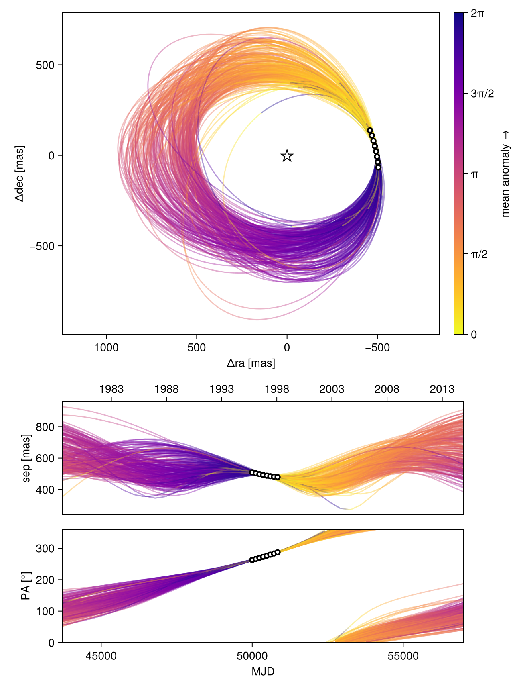
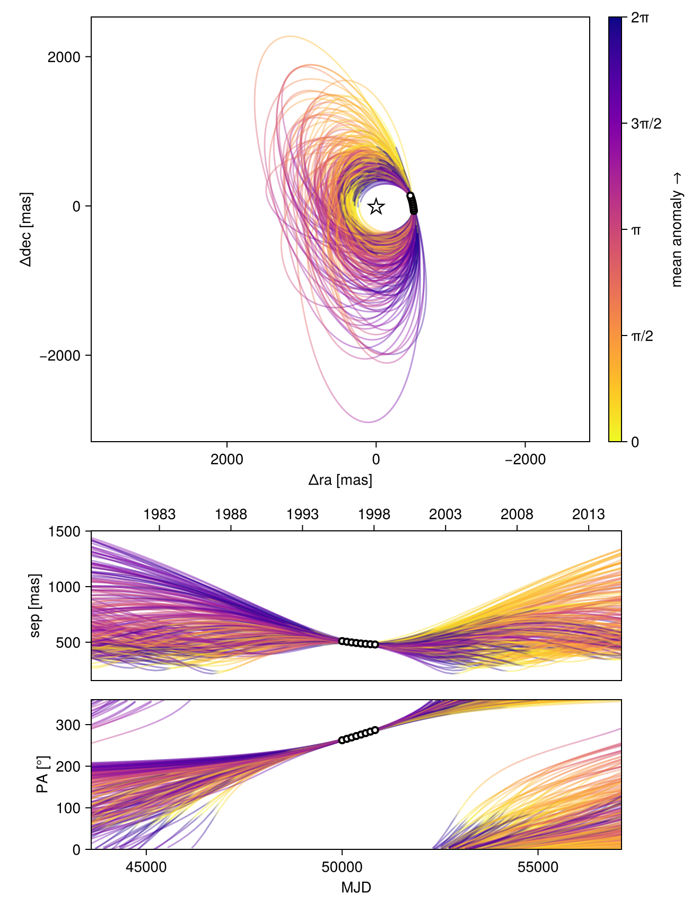
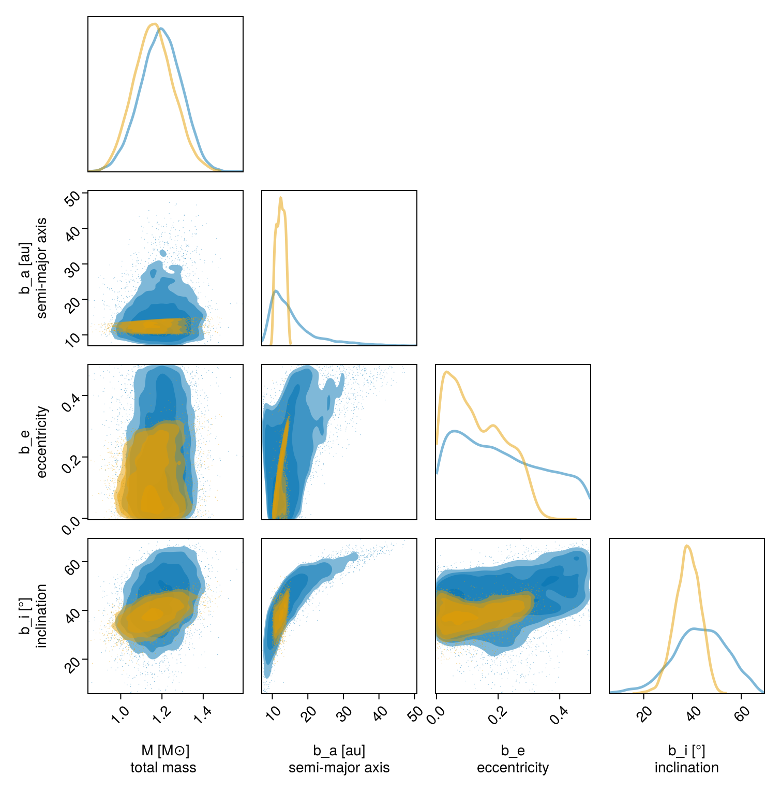

Observable-Based Priors
This tutorial shows how to fit an orbit to relative astrometry using the observable-based priors ofO'Neil et al. 2019. Please cite that paper if you use this functionality.
We will fit the same astrometry as in the previous tutorial, and just change our priors.
using Octofitter
using CairoMakie
using PairPlots
using Distributions
astrom_like = PlanetRelAstromLikelihood(
(epoch = 50000, ra = -505.7637580573554, dec = -66.92982418533026, σ_ra = 10, σ_dec = 10, cor=0),
(epoch = 50120, ra = -502.570356287689, dec = -37.47217527025044, σ_ra = 10, σ_dec = 10, cor=0),
(epoch = 50240, ra = -498.2089148883798, dec = -7.927548139010479, σ_ra = 10, σ_dec = 10, cor=0),
(epoch = 50360, ra = -492.67768482682357, dec = 21.63557115669823, σ_ra = 10, σ_dec = 10, cor=0),
(epoch = 50480, ra = -485.9770335870402, dec = 51.147204404903704, σ_ra = 10, σ_dec = 10, cor=0),
(epoch = 50600, ra = -478.1095526888573, dec = 80.53589069730698, σ_ra = 10, σ_dec = 10, cor=0),
(epoch = 50720, ra = -469.0801731788123, dec = 109.72870493064629, σ_ra = 10, σ_dec = 10, cor=0),
(epoch = 50840, ra = -458.89628893460525, dec = 138.65128697876773, σ_ra = 10, σ_dec = 10, cor=0),
)
@planet b Visual{KepOrbit} begin
e ~ Uniform(0.0, 0.5)
i ~ Sine()
ω ~ UniformCircular()
Ω ~ UniformCircular()
# Results will be sensitive to the prior on period
P ~ LogUniform(0.1, 50)
a = ∛(system.M * b.P^2)
θ ~ UniformCircular()
tp = θ_at_epoch_to_tperi(system,b,50420)
end astrom_like ObsPriorAstromONeil2019(astrom_like)
@system TutoriaPrime begin
M ~ truncated(Normal(1.2, 0.1), lower=0)
plx ~ truncated(Normal(50.0, 0.02), lower=0)
end b
model = Octofitter.LogDensityModel(TutoriaPrime)LogDensityModel for System TutoriaPrime of dimension 11 with fields .ℓπcallback and .∇ℓπcallback
Now run the fit:
using Random
Random.seed!(0)
results_obspri = octofit(model,iterations=5000,)Chains MCMC chain (5000×29×1 Array{Float64, 3}):
Iterations = 1:1:5000
Number of chains = 1
Samples per chain = 5000
Wall duration = 18.75 seconds
Compute duration = 18.75 seconds
parameters = M, plx, b_e, b_i, b_ωy, b_ωx, b_Ωy, b_Ωx, b_P, b_θy, b_θx, b_ω, b_Ω, b_a, b_θ, b_tp
internals = n_steps, is_accept, acceptance_rate, hamiltonian_energy, hamiltonian_energy_error, max_hamiltonian_energy_error, tree_depth, numerical_error, step_size, nom_step_size, is_adapt, loglike, logpost, tree_depth, numerical_error
Summary Statistics
parameters mean std mcse ess_bulk ess_tail ⋯
Symbol Float64 Float64 Float64 Float64 Float64 Flo ⋯
M 1.1607 0.0965 0.0019 2500.4657 3000.0689 0. ⋯
plx 49.9998 0.0202 0.0003 4994.4098 3085.0817 1. ⋯
b_e 0.1313 0.0899 0.0029 947.3817 1520.3039 1. ⋯
b_i 0.6621 0.0905 0.0020 2070.1082 1834.4405 0. ⋯
b_ωy 0.3114 0.7430 0.2110 16.9143 80.6081 1. ⋯
b_ωx 0.1845 0.5754 0.1531 16.7589 92.6908 1. ⋯
b_Ωy -0.1513 0.5042 0.1250 17.2723 96.0356 1. ⋯
b_Ωx -0.3499 0.7861 0.2323 16.3722 78.4478 1. ⋯
b_P 40.5739 5.7121 0.1477 1402.2582 1347.9895 1. ⋯
b_θy 0.0746 0.0102 0.0002 3975.1899 2877.7531 1. ⋯
b_θx -1.0025 0.0989 0.0015 4518.3090 2810.1169 1. ⋯
b_ω -0.2766 1.4866 0.4209 18.1646 85.5833 1. ⋯
b_Ω -1.0976 1.4755 0.4362 16.5953 99.1207 1. ⋯
b_a 12.3658 1.1681 0.0293 1577.4051 2059.6522 1. ⋯
b_θ -1.4965 0.0071 0.0001 3877.6590 3476.6089 1. ⋯
b_tp 43130.3961 7183.9839 106.2004 3904.6428 2331.5072 1. ⋯
2 columns omitted
Quantiles
parameters 2.5% 25.0% 50.0% 75.0% 97.5%
Symbol Float64 Float64 Float64 Float64 Float64
M 0.9794 1.0944 1.1594 1.2239 1.3540
plx 49.9611 49.9860 49.9997 50.0139 50.0393
b_e 0.0053 0.0536 0.1163 0.2018 0.3044
b_i 0.4747 0.6025 0.6652 0.7270 0.8239
b_ωy -1.0396 -0.3978 0.6933 0.9148 1.1149
b_ωx -0.9773 -0.2402 0.2974 0.6011 1.0418
b_Ωy -0.9800 -0.4860 -0.1735 0.1194 0.9208
b_Ωx -1.1332 -0.9560 -0.7763 0.4917 1.0835
b_P 30.0535 35.9882 40.7431 45.5273 49.5784
b_θy 0.0559 0.0677 0.0741 0.0810 0.0955
b_θx -1.2072 -1.0656 -0.9978 -0.9349 -0.8220
b_ω -2.9658 -1.9174 0.3075 0.6659 1.5722
b_Ω -2.7949 -2.0680 -1.7409 0.5368 1.5477
b_a 10.3260 11.3884 12.3866 13.3228 14.4011
b_θ -1.5109 -1.5013 -1.4965 -1.4916 -1.4833
b_tp 32754.8273 35989.5174 47830.6616 50207.7790 50399.6232
octoplot(model, results_obspri)
Compare this with the previous fit using uniform priors:
octoplot(model, results_unif_pri)
We can compare the results in a corner plot:
octocorner(model,results_unif_pri,results_obspri,small=true)